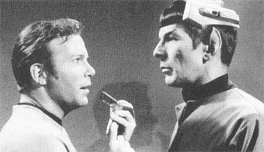
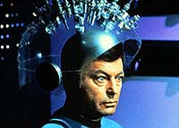
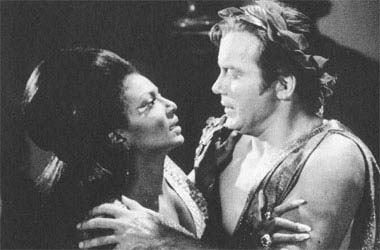
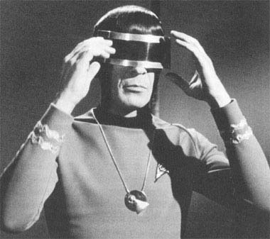

|

Clique aqui
para visitar o
Acervo de colunas

|

|
Terceiro ano: diversão ou decepção? Há algum tempo eu estava
assistindo a um episódio da Voyager, "Threshold",
em que Tom Paris pilota uma nave auxiliar modificada para chegar
à dobra 10. Como resultado ele se transforma em um... peixe-gato!
Logo depois a capitã Janeway também vira peixe-gato, ambos
cruzam e o resultado é uma ninhada de filhotes de peixe-gatos. No
final todos voltam ao normal.  Após todos esses acontecimentos, resolvi rever mais alguns episódios do terceiro ano da Série Clássica. Terminada a minha maratona cheguei a uma nova conclusão: Não há episódios "chatos" na Série Clássica; há episódios ruins, mas nenhum chato. Os episódios do terceiro ano, se olhados sobre a perspectiva de que são divertidíssimos trashs de ficção científica, passam do patamar de episódios ruins para um nível mais elevado, mais de acordo com uma série dos anos 60, ou seja, de um descontraído e divertido programa que proporcionará bons 51 minutos de duração. Uma vez li uma sábia frase relativa aos filmes trash: "Aprenda a assistir aos filmes ruins, às vezes eles podem ser sublimes". A maioria dos cinéfilos conhece o diretor Ed Wood e sua mais aclamada "obra", "Plan 9 From Outer Space". Mesmo sendo um dos piores filmes já realizados, ninguém pode acusá-lo de ser um filme chato. Uma vez que entramos no "clima" do filme, com atores terrivelmente canastrões, cenários de papelão, (de)efeitos especiais de quinta categoria, diálogos hilários etc., teremos uma boa sessão de risos. É puro divertimento e é isso que um filme deve proporcionar. Acredito que a maioria dos episódios do terceiro ano da Série Clássica, assim como alguns do primeiro e segundo anos, devem ser encarados dessa forma. Assim vejamos alguns exemplos do terceiro ano: Spock's Brain  Provavelmente deve ser o mais absurdo roteiro já escrito em Jornada. Uma raça de lindas moças alienígenas com penteados mirabolantes roubam o cérebro de Spock para usá-lo como fonte administradora de seu mundo. Pior ainda é o corpo de Spock, sem cérebro, sendo operado por controle remoto. E há, também, uma célebre frase proferida por McCoy ao constatar a ausência do cérebro em Spock: "His brain is gone!" Dificilmente alguém vai se esquecer dessa frase.Parece ruim? É mesmo ruim. Mas não é hilário também? É. Dá para se divertir assistindo à essa "pérola" ? Muito. Ponto final na questão. Plato's Stepchildren A Enterprise encontra alienígenas que se proclamam seguidores dos ensinamentos de Platão e que possuem poder mental para controlar nossos personagens como bem entendem. Ver Kirk e Spock devidamente togados, cantando e dançando a bel prazer dos alienígenas já vale o programa. A cena do beijo entre Kirk e Uhura, incontestavelmente de valor histórico na TV, pode causar involuntários risos.  The Way to Eden Hippies alienígenas dominam a Enterprise para usá-la para chegar à Eden, um planeta idílico. A cena em que Spock se une aos alienígenas para tocar uma música terrivelmente cafona dos anos 60 deve ser o momento mais hilário de toda a série. É a segunda vez que vemos Spock cantando no terceiro ano; a primeira foi em "Plato's Stepchildren". The Savage Curtain Um ser alienígena planeja uma luta entre o bem e o mal, para tanto trazendo de volta à vida diversas figuras históricas. Do lado da tripulação da Enterprise contra o mal está ninguém mais do que o próprio Abraham Lincoln! God bless America. Preciso dizer mais? Turnabout Intruder Uma mulher vingativa troca de corpo com o capitão Kirk para assumir o seu lugar. Será que veremos William Shatner com trejeitos femininos? Com certeza não, pois o ator preferiu interpretar uma mulher como um ser instável dado a ataques de temperamento. Será que a atriz cujo corpo recebe a identidade de Kirk consegue interpretar William Shatner? Até que consegue, pois não é tão difícil assim. Diversão garantida do começo ao fim. Por falar em fim, esse foi o último episódio da Série Clássica. E por falar em finais, prefiro bem mais esse episódio do que o decepcionante (e ruim e chato) "Endgame" que concluiu a série Voyager. Os dois primeiros anos, muito superiores e de melhor qualidade, também tiveram alguns episódios fracos, mas poucos desses podem se qualificar como divertidos. Nesse perfil se encaixam: "Catspaw" (divertido Dia das Bruxas para a tripulação da Enterprise), "Who Mourns for Adonais?" (a Enterprise encontra o deus Apolo), "Bread and Circuses" (alienígenas que por analogia se equiparam a um Império Romano no Século 20 usam Kirk, Spock e McCoy como gladiadores em um programa de TV), "The Gamesters of Triskellion" (de novo a tripulação da Enterprise envolvida em jogos de gladiadores, onde Kirk ensina uma bela alienígena a amar!) e "The Omega Glory" (onde Kirk ensina a uma raça alienígena que o melhor modelo para um Estado é a Constituição norte-americana, tudo isso ao som do hino americano e com closes da bandeira americana. Acho que nem o filme ID4 apelou tanto assim). Os episódios do terceiro ano que foram analisados acima são os melhores exemplos do nível em que a série chegou ao seu final, ou seja, uma ausência total de seriedade, abandono total de conceitos sérios de ficção científica e abandono dos conceitos sobre a natureza humana, elementos esses que fizeram dos dois primeiros anos uma revolução no padrão de televisão. Entretanto, e como dito antes, se colocarmos de lado essas expectativas podemos encontrar um bom divertimento nesses episódios. Os ingredientes estão todos lá, basta saber vê-los. 
Luiz
Felipe do Vale Tavares é fã de Jornada, DVDs e ficção
científica e escreve sobre Série Clássica para o Trek
Brasilis |